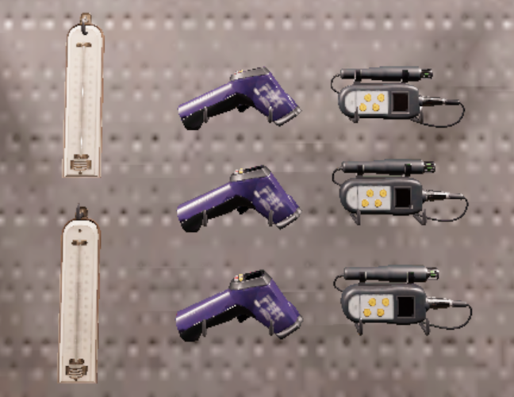

Оборудование, что это? Зачем оно нужно? Что стоит брать?
Оборудование - неотьемлимая часть игры, это важная часть геймплея без которых будет сложно вычеслить тип призрака, выполить задание и другое, однако всё таки вычеслить призрака можно и без оборудования, но разве надо этим заниматься на начале игры? Поэтому сейчас вы узнаете какое оборудование что делает, что стоит взять с собой и т.д.
Чтобы понять что стоит прокачивать, и что полезно в игре, я подписал оценку каждому уровню предмета. Тут учитывается практичность и удобство сравнивая все 3 уровня предмета и их стоимость, так же не учитывается важность этого предмета в игре... Ваше решение стоит ли качать.
Начнем по порядку:
Лазерный проектор
Лазерный проектор - нужен чтобы вы отметить улику "Лазерный проектор", она вычесляется таким методом что если вы видите у себя на экране силуэт идущий по лазерному проектору, значит эта улика придсутсвует, получить её не так просто, поставить его можно на клавишу F (по умолчанию).
- 1 уровень: 3/10
- 2 уровень: 8/10
- 3 уровень: 5/10
Детектор ЭМП
Детектор ЭМП - нужен чтобы вы могли найти взаимодействия призрака с объектами, будь то дверь или звонящий телефон. Когда призрак взаимодействует если ваш детектор включен (ПКМ) и находиться у вас в руках или на полу, то тогда стрелочка на вашем утройстве начнет двигаться, если оно будет заходить за 5 значит улика "ЭМП 5" придсутствует, однако это не считается во время охоты, ведь тогда детектор начнет ломаться и показывать случайные значения!
- 1 уровень: 6/10
- 2 уровень: 3/10
- 3 уровень: 10/10
Дневник
Дневник - он нужен чтобы получить улику "Записи в дневнике", на кнопку F (по умолчанию) вы должны положить его в комнате призрака, так же у дневника есть радиус, зажав кнопку вы сможете его увидить. Псоле того как вы положили дневник в комнате призрака, он может в какой-то момент расписаться в нем, так же если он вдруг перевернул дневник, и в нем нету записей, значит их не и будет!
- 1 уровень: 3/10
- 2 уровень: 5/10
- 3 уровень: 9/10
Радиоприёмник
Радиоприёмник - он нужен чтобы получить улику "Радиоприёмник", при включения его (ПКМ) вы должны быть в темноте, вы должны спрашивать вопросы например: "Сколько тебе лет", "Ты молодой?", "Дай мне знак!" и т.д. Если вы получили ответ значит улика придсутствует, так же можно его использовать после "гост ивента" или же "обманной атаки", став на место где был призрак вы с высоким шансом получите его ответ, если конечно он имеет эту улику...
- 1 уровень: 4/10
- 2 уровень: 6/10
- 3 уровень: 9/10
Термометр
Термометр - он нужен чтобы получить улику "Минусовая температура", заходя к призраку в комнату у вас начнется снижаться полоска (должен быть включен электро щиток), если температура опустилась низко, например 7-8 градусов, то призрак с большей вероятностью в этой комнате, если тепература опустилась ниже 0, значит это минусовая температура, так же если у вас из-за рта идет пар, значит в этой комнате холодно (не минусовая, ХОЛОДНО).
- 1 уровень: 8/10
- 2 уровень: 3/10
- 3 уровень: 5/10
Ультрафиолет
Ультрафиолет - он нужен чтобы получить улику "Ультрафиолет", при включения его (ПКМ) у вас будет фиолетовое свечение, в его радиусе вы сможете найти отпечатки рук или ног, однако чтобы их получить нужно чтобы призрак потрогал дверь, послучал в окно или походил по соли.
- 1 уровень: 6/10
- 2 уровень: 3/10
- 3 уровень: 7/10
Видеокамера
Видеокамера - он нужен чтобы получить улику "Призрачный огонёк", при включения его ночного видинья (ПКМ), вы сможете обнаружить маленькую летающую пыль по комнате, это призрачный огонёк(только в комнате призрака). Эта улика не является уликой для "Мимика" у этого призрака он есть всегда! Так же вы можете его поставить зажав F(по умолчанию)

- 1 уровень: 2/10
- 2 уровень: 7/10
- 3 уровень: 8/10
Распятие
Распятие - оно нужено чтобы призрак не смог начать охоту, и для задания. Зажимая на F (по умолчанию) вы сможете зажав увидить радиус действия распятия, если призрак заспавниться в радиусе действия распятия, он не сможет начать охоту! Покупной предмет
- 1 уровень: 3/10
- 2 уровень: 7/10
- 3 уровень: 8/10
Свеча
Свеча - нужна для задания, а так же при заженной свече рассудок не снижается пока вы находитесь рядом, чтобы её зажечь нужна зажигалка, поставив её на F (по умолчанию) зажгите зажигалкой, или же держа в руках нажмите F (по умолчанию) чтобы её зажечь и F (по умолчанию) чтобы поставить её, призрак может её потушить находясь рядом. Покупной предмет
- 1 уровень: 2/10
- 2 уровень: 6/10
- 3 уровень: 8/10
Фонарик
Фонарик - как не странно этот предмет помогает хоть что-то видить в темноте, если он начинает мерцать, значит около вас призрак, выкл. его и призрак не пойдет к вам, вы можете его включить держа просто в инвенторе, при нажатии кнопку T(по умолчанию)

- 1 уровень: 2/10
- 2 уровень: 5/10
- 3 уровень: 8/10
Камера на голову
Камера на голову - этот предмет будет забавной игрушкой если вы играете с друзьями, она так же показывает "Призрачный огонёк", надев её на голову зажмите T(по умолчанию) чтобы включить, теперь все могут наблюдать за вами из фургона. Покупной предмет

- 1 уровень: 1/10
- 2 уровень: 8/10
- 3 уровень: 10/10
Спички
Спички - полезный предмет, с помощью него держа в руках свечу или благовония на F(по умолчанию) вы сможете его зажечь, так же призрак может потушить спичку если будет рядом. Покупной предмет
- 1 уровень: 3/10
- 2 уровень: 8/10
- 3 уровень: 10/10
Благовоние
Благовоние - один из самых полезных предметов, он мешает призраку убить вас во время охоты на несколько секунд, после того как охота закончилась призрак бездействует полторы минуты, однако демон только минуту, а дух 3 минуты. Чтобы зажечь благовонию у вас должна быть зажигалка/спички в инветоре и нажав F (по умолчанию) оно используется. Покупной предмет
- 1 уровень: 6/10
- 2 уровень: 8/10
- 3 уровень: 10/10
Датчик двежения
Датчик двежения - нужен для задания, он начинает сигналить если призрак прошел перед ним, так же работает на других игроков призраков, и на вас, установить его можно как на стене, так и на полу зажав F (по умолчанию). Покупной предмет
- 1 уровень: 8/10
- 2 уровень: 4/10
- 3 уровень: 7/10
Направленый микрофон
Направленый микрофон - нужен для задания, направив его в сторону комнаты призрака или самого призрака можно услышать как он будет шептать вам, таким способом можно вычеслить сторону в которой находиться призрак. Покупной предмет
- 1 уровень: 5/10
- 2 уровень: 4/10
- 3 уровень: 10/10
Фотокамера
Фотокамера - этот предмет дает возможность делать фотографии, все фотографии сохр до 10 штук на соответсвующей вкладке, фотки могут быть от 1 до 3 звёзд или вообще без них, звёзды определяют четкость фото, на котором может быть изображено взаимодействие/призрак/проклятый предмет/кость и т.д. Чем больше звёзд тем больше денег вы получите за это фото, важный предмет для идеального расследования. Покупной предмет
- 1 уровень: 2/10
- 2 уровень: 6/10
- 3 уровень: 8/10
Соль
Соль - полезный предмет, установив соль в комнате призрака, он может наступить на соль (искл. Мираж) после этого он на некоторое время оставит отпечатки ног если у него есть улика "Ульрафиолет". Покупной предмет
- 1 уровень: 2/10
- 2 уровень: 5/10
- 3 уровень: 10/10
Успокоительное
Успокоительное - если на экране рассудка у вас его мало, стоит выпить успокоительное, что увеличит ваш рассудок на какое-то время. Покупной предмет
- 1 уровень: 4/10
- 2 уровень: 5/10
- 3 уровень: 10/10
Датчик звука
Датчик звука - поставив его на F (по умолчанию) он будет захватывать звуки вокруг него. Суммы звуков передаются на монитор звуковых датчиков в фургоне. Покупной предмет
- 1 уровень: 6/10
- 2 уровень: 3/10
- 3 уровень: 5/10
Штатив
Штатив - на него можно установить видеокамеру, и установить в более удобные места, или места где некуда ставить видеокамеру. Покупной предмет
- 1 уровень: 1/10
- 2 уровень: 5/10
- 3 уровень: 6/10